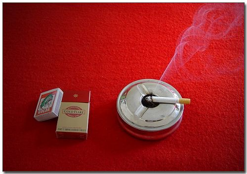
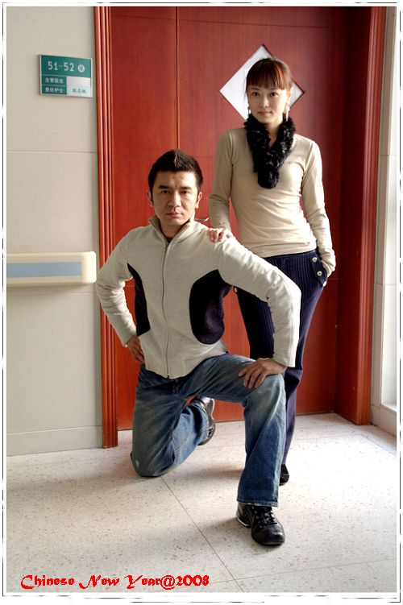

Archives : 2008-02
闰年 @ Feb 29, 2008
今天是2月29日，4年才多这么1天，今天应该做点有意义的事～
演出 @ Feb 28, 2008
“后街男孩”要来南京开演唱会，现在应该是后街男人了，没兴趣去看。
陈佩斯的《阿斗》没看上，很遗憾。
观《颐和园》 @ Feb 26, 2008
《颐和园》是一部以89年六四学潮为背景的电影，也许有关爱情，也许有关盲目的人生，也许有关混乱...总之娄烨因为没有取得电影局审查通过令，违规参赛07年戛纳电影节被电影局判定五年内不得拍片。娄烨，就是那个拍《苏州河》和《紫蝴蝶》的导演。
我想大多数对于《颐和园》的好奇除了学潮背景外，还有大量赤身裸体但称不上激情的表演（以至于看到后半段我都嫌烦了），另外娄烨被禁拍也是引起极大好奇心的原因之一。虽然比起国外不算很疯狂，但在中国却是大突破，填补了中国人的肉体在银幕史上的空白。
有人称赞，有人批判，也有人称之为“harlot”的电影，又臭又长。
被人忽悠了几句，于是我是怀着看文艺片的心情开始观片的，不知道是不是因为当天晚上吃了太多面食，胃里面翻江倒海的看完这部片子。只总结了一点：冲动的人生注定是混乱的！
shot by jiajialing @ Feb 25, 2008
留恋 @ Feb 22, 2008

2月21日0点刚过，便听见外面噼里啪啦的鞭炮声，一直到21日晚上12点鞭炮声仍然不绝于耳。此前节日从我的感觉里消失了。
元宵节晚上12点，打电话向女友诉说对于这个节日忽然迸发出些许留恋，留恋鞭炮声，留恋夜空中璀璨的烟花，留恋逝去的春节，留恋着留恋...究竟留恋什么，自己也不知道。
春节.探班 @ Feb 14, 2008
春节去剧组探班，朋友作为中央电视台和江苏省电视台合作的20集电视连续剧《龙脉》的制片方及电视剧中男7号，春节仅放了两天假，他便没有回北京，初七去看他，因为同步录音，医院走廊上静悄悄，原来拍电视剧是这样的，原来剧照是这样拍成的，呵呵~~


